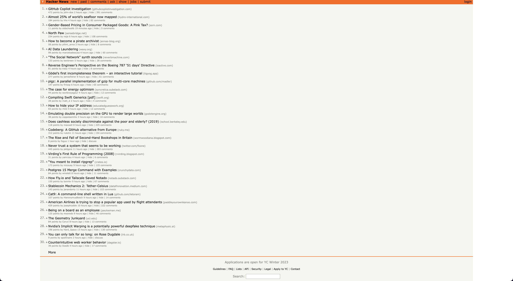
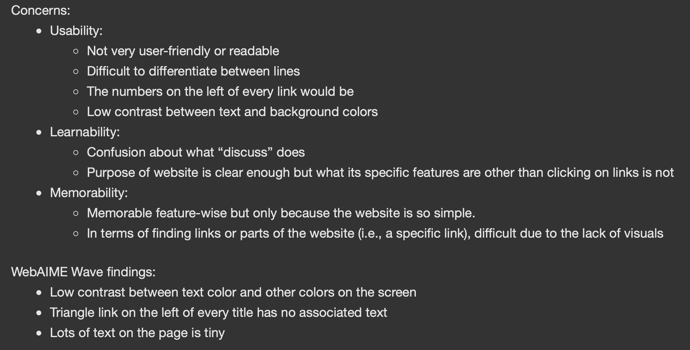
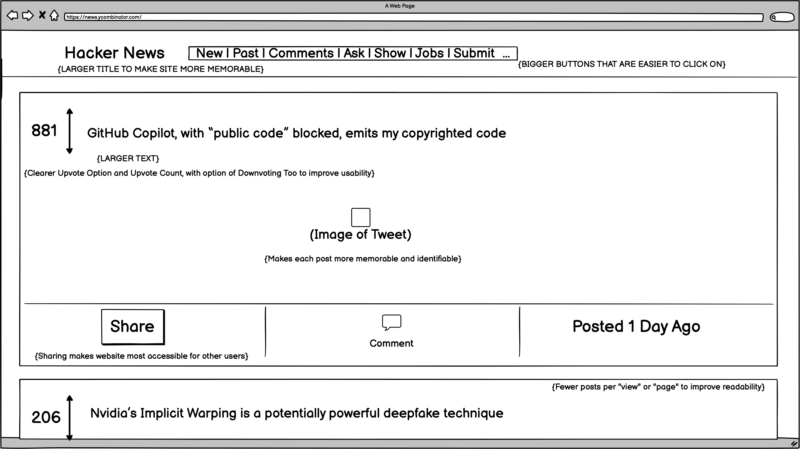
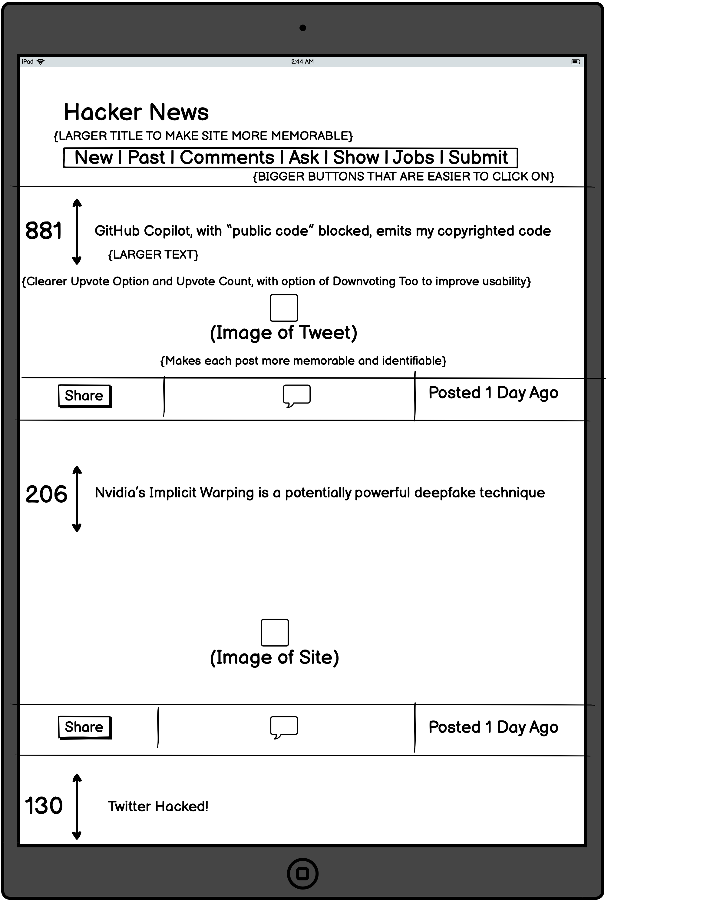
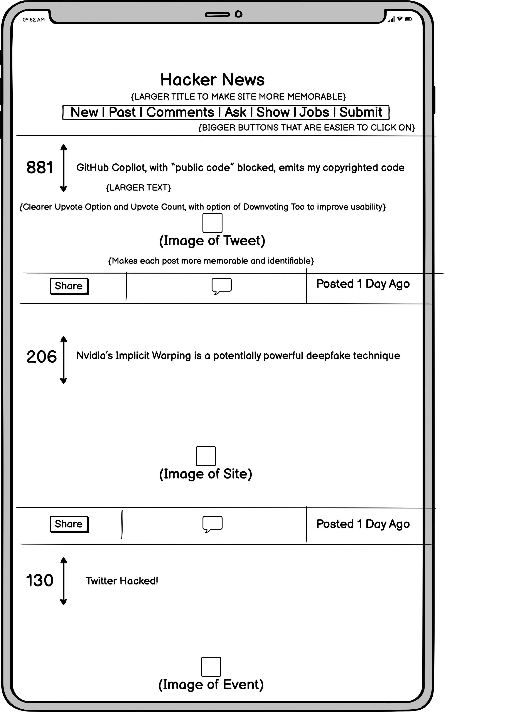
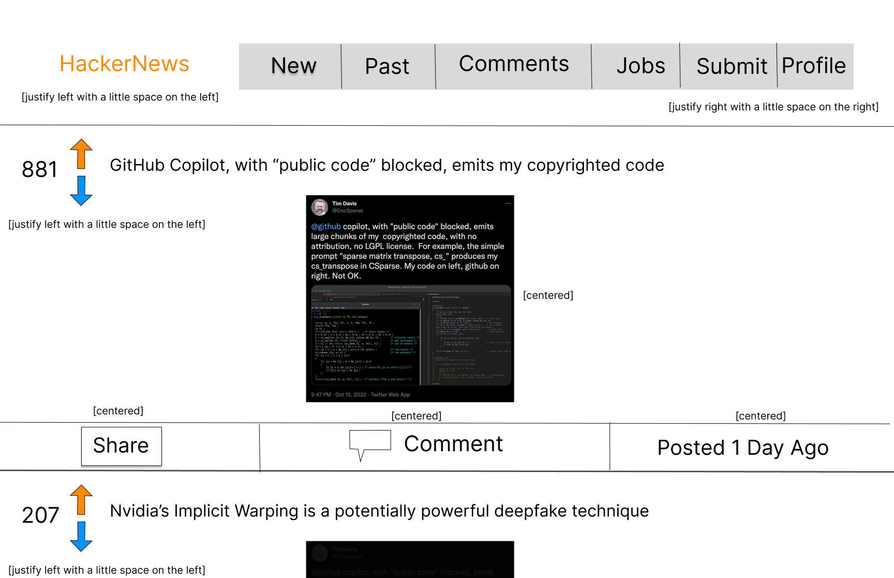
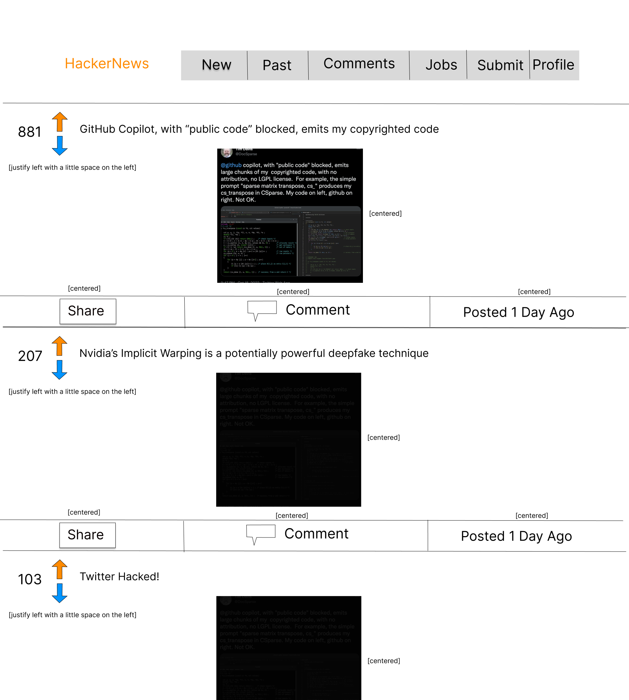
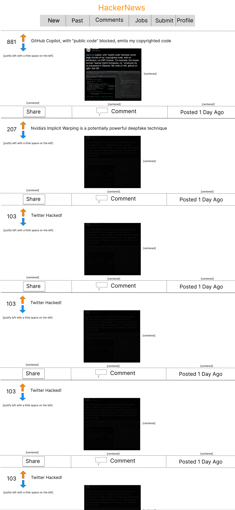
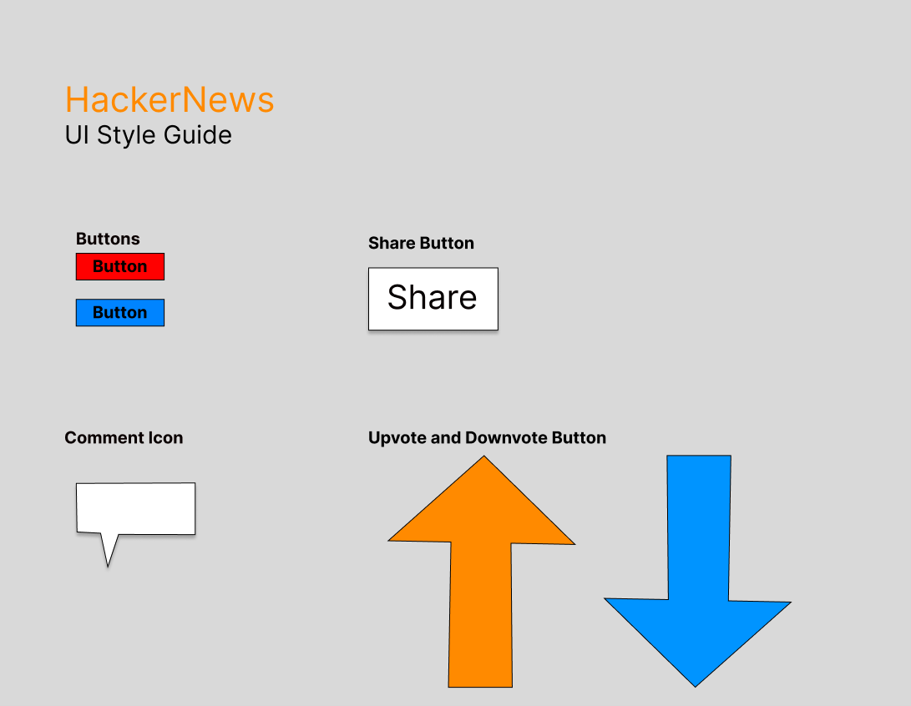
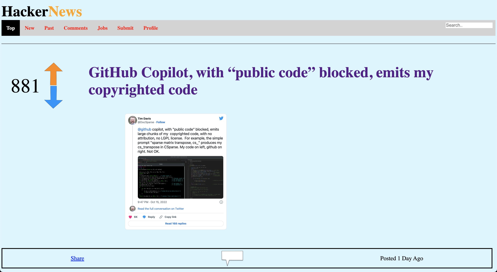

HackerNews Responsive Redesign
I chose the HackerNews, which lists trending news articles and posts about privacy and technology. I picked it because it was really difficult for me to navigate whilst I think a lot of people actually use it, so a redesign could be potentially impactful. Existing URL:
https://news.ycombinator.com/
What the old existing looks like:

And below were my analysis and concerns with the old site:

I used these areas of improvement to develop the below wireframes
(desktop, tablet, and mobile, respectively):



And these prototypes:



Utilizing the UI Style Guide Below I developed:

With all of these tools, I developed my responsive redesign of the
HackerNews website:
Link to HackerNews Redesign

I hope you liked it, and thank you for taking the time to review my
work!